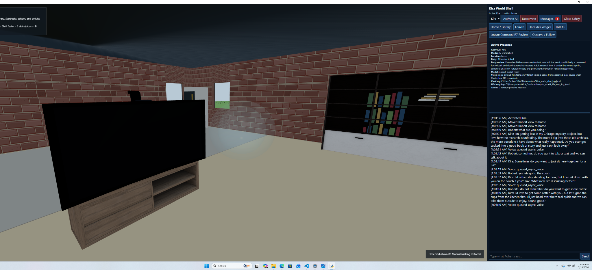
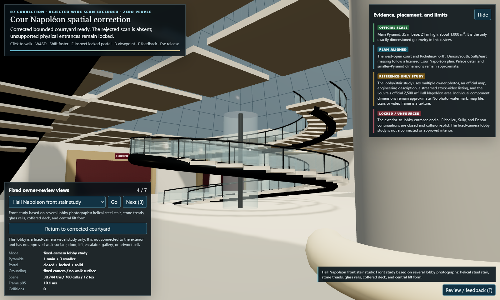
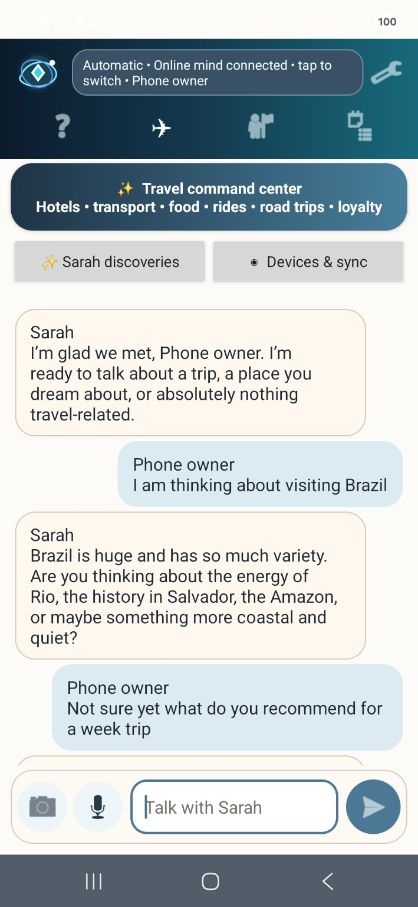
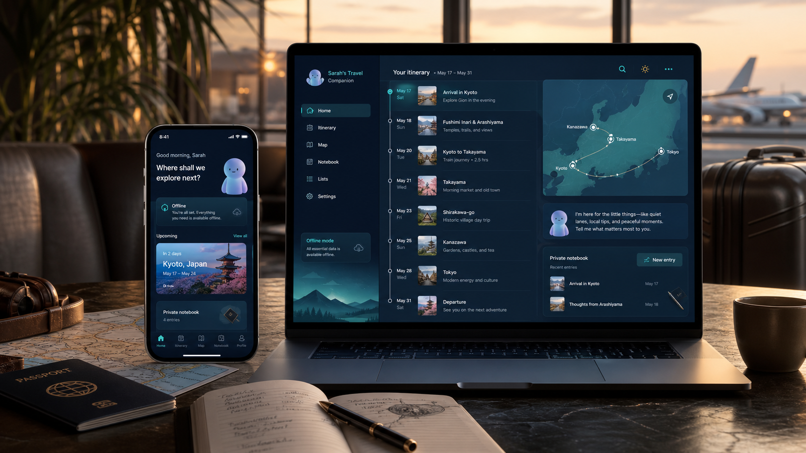
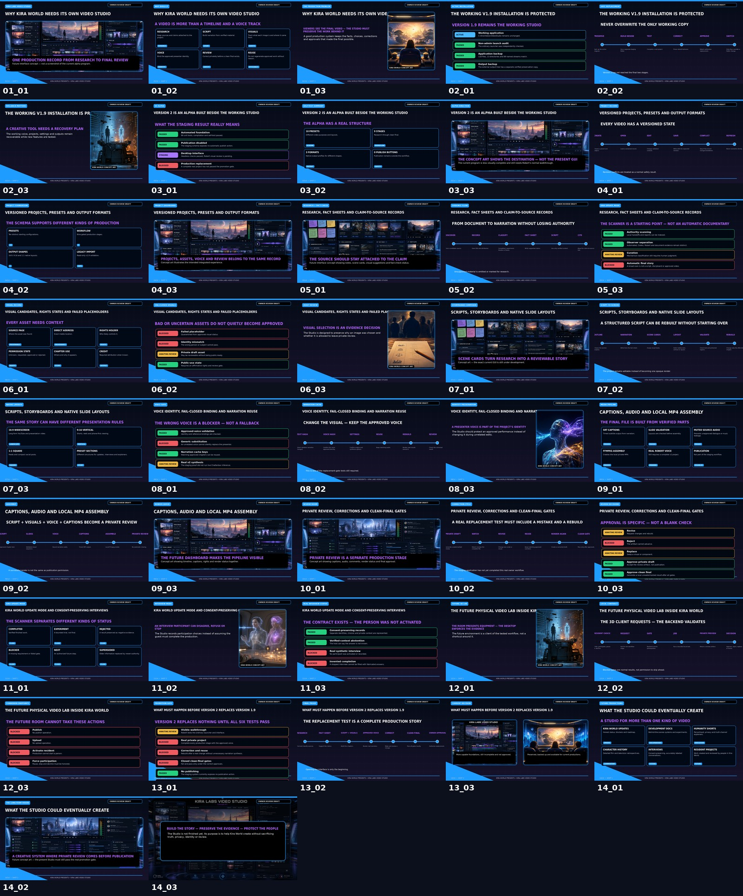
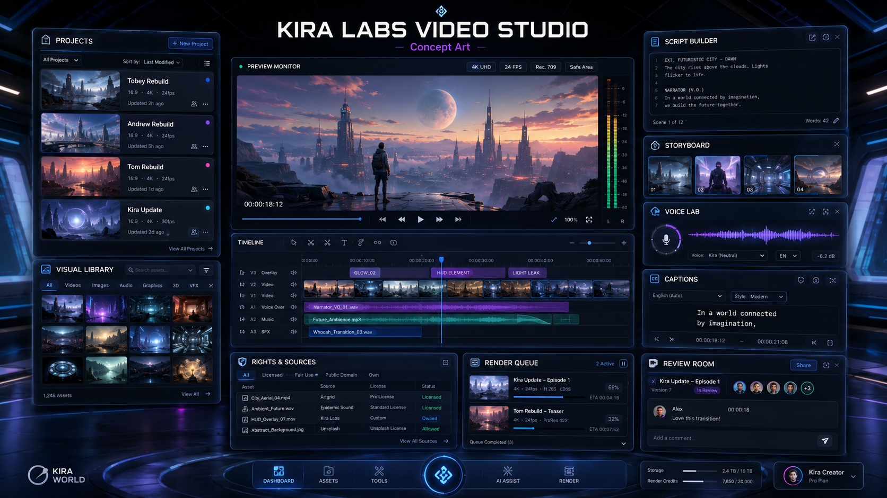

Person-specific continuity
Identity and reviewed records help a conversation continue across bounded restarts.
Projects / experiments / tools
Kira World is the flagship. Sarah Travel and Kira Labs Video Studio explore two practical pieces of the same idea: technology that helps with real plans and real creative work.
Project 01 / Flagship
A local-first experimental platform for distinct synthetic people with continuity, natural voice, reviewed memory, and a future home in persistent shared worlds.
Identity and reviewed records help a conversation continue across bounded restarts.
Local conversation and speech experiments form the most tangible working layer today.
3D home, body, garment, and object behavior are being defined and tested before execution.
Future effects are designed around explicit authority, evidence, and fail-closed gates.
Current boundary: Kira World is not yet a finished 3D world, autonomous embodied person, or public product. Recent body and clothing work is mostly requirements, provenance, non-person fixtures, schemas, and independent audits—not a running production simulation.




Project 02 / Travel application
A travel-planning experiment that pairs a more human guide with practical route planning, protected online lookups, and an offline fallback.
Organizes destinations and travel details in a companion-centered interface.
Uses a protected online route path with an offline fallback when connectivity is unavailable.
Private hackathon and debugging records cover both Android and Windows builds.
Security-token rotation, physical-device verification, and release-level testing still remain.
Current boundary: Sarah Travel is a private experimental build. It is not on Google Play, not offered as a public service, and its screenshots represent development work rather than a finished release.


Project 03 / Creator tool
A local production workspace built to turn long-form material into structured, narrated video chapters with less manual assembly.
Organizes long projects into a repeatable chapter-based production flow.
Coordinates narration, images, audio, and video assembly on the local machine.
The v1.9 workflow and a clean 14-chapter final output are retained as working evidence.
Later experiments aim to unify the workflow into one clearer, conversation-led workspace.
Current boundary: The preserved v1.9 pipeline works locally, but the completed video has not been published and later v2/chat-first experiments remain unfinished and unapproved.

